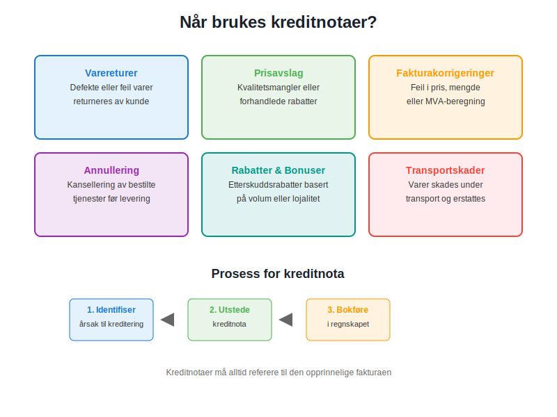
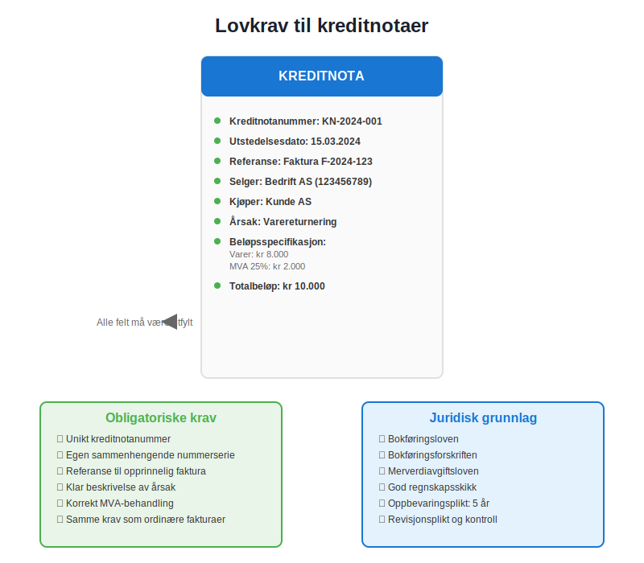
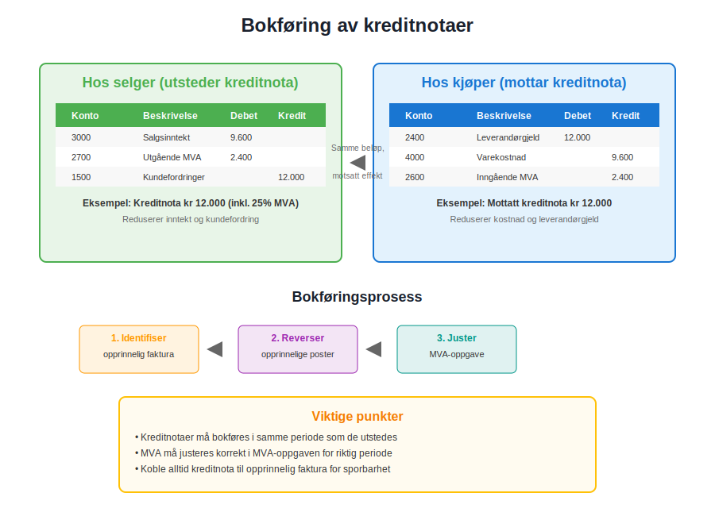
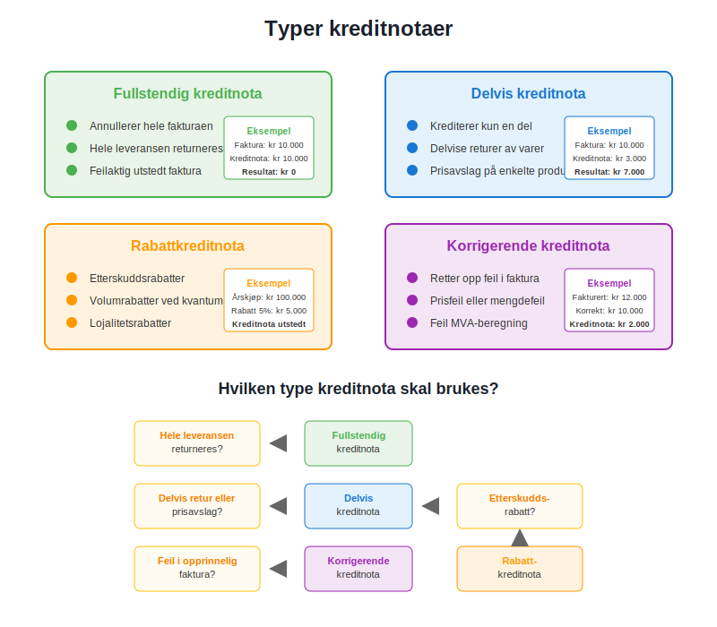

En kreditnota er et regnskapsdokument som fungerer som en “negativ faktura” - den reduserer eller annullerer helt eller delvis en tidligere utstedt faktura. Kreditnotaer er essensielle verktøy i moderne bokføring og spiller en kritisk rolle i korrekt regnskapsbehandling av returer, prisavslag og fakturakorrigeringer. I norsk regnskap må kreditnotaer følge samme lovkrav som ordinære fakturaer og er regulert av bokføringsloven.
Seksjon 1: Når Brukes Kreditnotaer?
Kreditnotaer utstedes i flere spesifikke situasjoner hvor det er nødvendig å korrigere eller reversere en tidligere fakturert transaksjon. Dette er særlig viktig for å opprettholde korrekt internkontroll og sikre nøyaktig regnskapsføring.

1.1 Hovedårsaker til Utstedelse av Kreditnotaer
- Varereturer: Når kunder returnerer defekte, feil eller uønskede varer
- Prisavslag: Ved kvalitetsmangler eller forhandlede rabatter etter levering
- Fakturakorrigeringer: Når det oppdages feil i pris, mengde eller merverdiavgift
- Annullering av tjenester: Ved kansellering av bestilte tjenester før levering
- Rabatter og bonuser: Etterskuddsrabatter basert på volum eller lojalitet
- Transportskader: Når varer skades under transport og erstattes
1.2 Forskjell Mellom Kreditnota og Faktura
| Aspekt | Faktura | Kreditnota |
|---|---|---|
| Formål | Krever betaling for varer/tjenester | Reduserer eller annullerer tidligere krav |
| Beløp | Positivt beløp | Negativt beløp (kreditering) |
| Regnskapseffekt | Øker inntekt og kundefordring | Reduserer inntekt og kundefordring |
| MVA-behandling | Utgående MVA | Reduserer utgående MVA |
| Referanse | Selvstendig dokument | Må referere til opprinnelig faktura |
Seksjon 2: Lovkrav til Kreditnotaer
I Norge er kreditnotaer underlagt samme juridiske krav som ordinære fakturaer, med noen tilleggskrav som sikrer sporbarhet og korrekt regnskapsbehandling.

2.1 Obligatoriske Opplysninger
En gyldig kreditnota må inneholde følgende informasjon i henhold til bokføringsforskriften:
- Kreditnotanummer: Unikt nummer i egen nummerserie
- Utstedelsesdato: Datoen kreditnotaen utstedes
- Referanse til opprinnelig faktura: Fakturanummer og dato
- Selgers identifikasjon: Navn, adresse og organisasjonsnummer
- Kjøpers identifikasjon: Navn og adresse
- Beskrivelse av årsak: Klar forklaring på hvorfor kreditnota utstedes
- Beløpsspecifikasjon: Detaljert oppstilling av krediterte beløp
- MVA-informasjon: Kreditert MVA-beløp og sats
- Totalbeløp: Samlet kreditert beløp
2.2 Nummerering og Sporbarhet
Kreditnotaer må ha egen sammenhengende nummerserie som er adskilt fra ordinære fakturaer. Dette sikrer korrekt bilagsregistrering og letter revisjonsarbeidet. Nummerserien må være:
- Kronologisk: Påfølgende numre uten hull
- Unik: Ikke gjenbrukt eller duplisert
- Sporbar: Lett å koble til opprinnelig faktura
Seksjon 3: Bokføring av Kreditnotaer
Korrekt bokføring av kreditnotaer er kritisk for nøyaktig regnskapsføring og avstemming av kundefordringer. Prosessen krever omvendt kontering sammenlignet med den opprinnelige fakturaen.

3.1 Regnskapsføring hos Selger
Når en bedrift utsteder en kreditnota, må følgende bilag registreres:
Eksempel: Kreditnota på kr 12.000 (inkl. 25% MVA)
| Konto | Beskrivelse | Debet | Kredit |
|---|---|---|---|
| 3000 | Salgsinntekt | 9.600 | |
| 2700 | Utgående MVA | 2.400 | |
| 1500 | Kundefordringer | 12.000 |
3.2 Regnskapsføring hos Kjøper
Når en kunde mottar en kreditnota, må den behandles som en inngående faktura med omvendt fortegn:
Eksempel: Mottatt kreditnota på kr 12.000 (inkl. 25% MVA)
| Konto | Beskrivelse | Debet | Kredit |
|---|---|---|---|
| 2400 | Leverandørgjeld | 12.000 | |
| 4000 | Varekostnad | 9.600 | |
| 2600 | Inngående MVA | 2.400 |
3.3 Behandling i Regnskapssystemer
Moderne regnskapssystemer håndterer kreditnotaer gjennom spesialiserte funksjoner som automatisk:
- Kobler kreditnota til opprinnelig faktura
- Beregner korrekt MVA-behandling
- Oppdaterer kundefordringer
- Genererer nødvendige rapporter for MVA-oppgave
Seksjon 4: Typer Kreditnotaer
Det finnes flere typer kreditnotaer som brukes i ulike forretningssituasjoner. Hver type har spesifikke anvendelsesområder og regnskapsmessige konsekvenser.

4.1 Fullstendig Kreditnota
En fullstendig kreditnota annullerer hele den opprinnelige fakturaen. Dette brukes når:
- Hele leveransen returneres
- Fakturaen var feilaktig utstedt
- Kontrakten kanselleres før levering
4.2 Delvis Kreditnota
En delvis kreditnota krediterer kun en del av den opprinnelige fakturaen:
- Delvise returer av varer
- Prisavslag på enkelte produkter
- Korrigering av mengdefeil
4.3 Rabattkreditnota
Rabattkreditnotaer utstedes for å gi etterskuddsrabatter:
- Volumrabatter ved oppnådd kvantum
- Sesongsrabatter
- Lojalitetsrabatter for gode kunder
4.4 Korrigerende Kreditnota
Korrigerende kreditnotaer retter opp feil i opprinnelig faktura:
- Prisfeil
- Mengdefeil
- Feil MVA-beregning
- Feil produktkoder
Seksjon 5: Elektroniske Kreditnotaer
I takt med digitaliseringen av regnskapsføring blir elektroniske kreditnotaer stadig mer utbredt. Dette følger samme utvikling som elektronisk fakturering og gir betydelige effektivitetsgevinster.
5.1 Fordeler med Elektroniske Kreditnotaer
- Raskere behandling: Automatisk mottak og behandling
- Reduserte feil: Eliminerer manuelle registreringsfeil
- Bedre sporbarhet: Digital kobling til opprinnelig faktura
- Kostnadsbesparelser: Reduserte porto- og papirkostnader
- Miljøvennlig: Mindre papirforbruk
5.2 Integrasjon med Regnskapssystemer
Moderne ERP-systemer støtter automatisk behandling av elektroniske kreditnotaer gjennom:
- API-integrasjoner: Direkte datautveksling mellom systemer
- EDI-standarder: Strukturert elektronisk datautveksling
- Automatisk matching: Kobling til opprinnelige fakturaer
- Workflow-styring: Automatiserte godkjenningsprosesser
Seksjon 6: Beste Praksis for Kreditnotaer
For å sikre korrekt håndtering av kreditnotaer og opprettholde god internkontroll, bør bedrifter følge etablerte beste praksis-prinsipper.
6.1 Kontrollrutiner
Etabler klare kontrollrutiner for utstedelse av kreditnotaer:
- Autorisasjon: Kun autorisert personell kan utstede kreditnotaer
- Dokumentasjon: All utstedelse må dokumenteres med årsak
- Godkjenning: Kreditnotaer over visse beløp krever ledergodkjenning
- Verifikasjon: Kontroller mot opprinnelig faktura og leveringsdokumenter
6.2 Oppfølging og Rapportering
Implementer systematisk oppfølging av kreditnotaer:
- Månedlige rapporter: Oversikt over utstedte kreditnotaer
- Trendanalyse: Identifiser mønstre i returer og korrigeringer
- Kundeanalyse: Følg opp kunder med hyppige kreditnotaer
- Leverandøroppfølging: Ved mottatte kreditnotaer
6.3 Arkivering og Oppbevaring
Kreditnotaer må arkiveres i henhold til bokføringsloven:
- Oppbevaringstid: Minimum 5 år fra regnskapsårets slutt
- Digital arkivering: Sikker lagring med backup-rutiner
- Tilgjengelighet: Lett tilgjengelig for revisjon og kontroll
- Sporbarhet: Klar kobling til relaterte dokumenter
Seksjon 7: Vanlige Feil og Fallgruver
Mange bedrifter gjør typiske feil ved håndtering av kreditnotaer som kan få alvorlige konsekvenser for regnskapet og MVA-oppgaven.
7.1 Typiske Feil
- Manglende referanse: Ikke koble kreditnota til opprinnelig faktura
- Feil MVA-behandling: Ikke justere utgående MVA korrekt
- Dobbel kreditering: Utstede både kreditnota og kontant refusjon
- Manglende dokumentasjon: Ikke dokumentere årsak til kreditering
- Feil kontering: Bruke feil kontoer i regnskapet
7.2 Konsekvenser av Feil
Feil håndtering av kreditnotaer kan føre til:
- MVA-avvik: Feil rapportering til Skatteetaten
- Regnskapsfeil: Feil driftsresultat
- Revisjonsmerknader: Kritikk fra revisor
- Skattemessige konsekvenser: Potensielle tilleggsskatter
Seksjon 8: Kreditnotaer og MVA
Kreditnotaer har direkte påvirkning på merverdiavgiftsbehandlingen og må håndteres korrekt i MVA-oppgaven for å unngå avvik med Skatteetaten.
8.1 MVA-behandling ved Utstedelse
Når en bedrift utsteder en kreditnota:
- Reduser utgående MVA: Med kreditert MVA-beløp
- Juster omsetning: Reduser MVA-pliktig omsetning
- Dokumenter endringen: I MVA-oppgaven for riktig periode
8.2 MVA-behandling ved Mottak
Når en bedrift mottar en kreditnota:
- Reduser inngående MVA: Med kreditert MVA-beløp
- Juster fradragsgrunnlag: Reduser grunnlag for MVA-fradrag
- Oppdater regnskapet: Korriger kostnadskonto og MVA-konto
8.3 Periodisering og Timing
Kreditnotaer må behandles i riktig MVA-periode:
- Utstedelsesdato: Avgjørende for hvilken periode som påvirkes
- Periodeavgrensning: Sikre korrekt periodisering
- Årsavslutning: Spesiell oppmerksomhet ved årsskifte
Konklusjon
Kreditnotaer er et essensielt verktøy i moderne regnskapsføring som sikrer korrekt behandling av returer, korrigeringer og prisavslag. Korrekt håndtering krever forståelse av lovkrav, regnskapsprinsipper og beste praksis. Ved å implementere gode rutiner for utstedelse, behandling og oppfølging av kreditnotaer, kan bedrifter opprettholde nøyaktig regnskapsføring og unngå kostbare feil.
For bedrifter som ønsker å optimalisere sin fakturabehandling, anbefales det å vurdere moderne digitale løsninger som automatiserer både fakturering og kreditnotahåndtering. Dette reduserer ikke bare administrative kostnader, men forbedrer også nøyaktigheten og sporbarhet i regnskapsføringen.